InventoryPOS Technical & Functional Project Documentation 3
Chapter 1 Introduction, Vision and Scope 3
1.5 Functional feature catalogue 5
1.6 Non-functional characteristics 6
Chapter 2 System Architecture 8
2.2 Solution and project structure 8
2.5 Dependency injection composition root 11
2.6 Application startup sequence 12
2.7 Request/response flow through the layers 13
2.8 Configuration and options providers 13
Chapter 3 Data Model and Persistence 13
3.2 Entity-relationship model 14
3.3 Tenancy and soft-delete strategies 14
3.6.1 Field-level encryption (always available) 17
3.6.2 Whole-database encryption (SQLCipher, opt-in) 17
Chapter 4 Functional Modules and Application Services 18
4.1 Authentication and authorisation 19
4.2 Point of Sale and the sales lifecycle 20
4.3 Inventory and the stock ledger 21
4.5 Products, customers, suppliers and purchase orders 22
4.7 Subscriptions and M-Pesa billing 23
4.9 KRA eTIMS fiscalisation 24
4.11 Navigation and screens 25
Chapter 5 Security, Quality, Operations and Roadmap 25
5.2 Testing strategy and current coverage 26
5.3 Build, run and deployment 27
5.5 Known limitations and placeholders 27
5.8 Appendix A Repository tree 28
5.9 Appendix B Key package versions 29
A multi-tenant Point-of-Sale and Inventory Management platform for Kenyan SMEs
| Field | Value |
|---|---|
| Document title | InventoryPOS Technical & Functional Project Documentation |
| Version | 1.0 |
| Date | 17 October 2026 |
| Author | Daniel Manyasa |
| Repository | D:\InventoryPOS |
| Primary branch | main |
| Solution | InventoryPOS.sln (5 projects) |
| Framework | .NET 8 / .NET MAUI |
| License | MIT |
This document is the authoritative description of the InventoryPOS system. It is written in Markdown so that diagrams render on GitHub and in editors, and it is exported to Microsoft Word (
.docx) byscripts/export-docs.ps1, which renders every Mermaid diagram to a PNG so that the diagrams remain visible in Word.
| Rev | Date | Change |
|---|---|---|
| 1.0 | 2026-10-17 | Initial consolidated documentation covering all 5 chapters. |
InventoryPOS is a cross-platform Point-of-Sale (POS) and inventory management application built on .NET 8 MAUI. A single codebase produces native apps for Android, iOS, Mac Catalyst and Windows desktop. Each installation is a complete, self-contained “till”: it sells products, tracks stock in real time, manages customers, suppliers, purchase orders and branches, prints receipts, and keeps working when the network drops.
The product is deliberately designed to be monetisable: every business that signs up is treated as a tenant, self-registers for a 14-day free trial, and can pay a monthly subscription in Kenyan Shillings using M-Pesa (through IntaSend). Subscription plans gate how many users, branches and products a tenant may create.
Small and medium retailers in Kenya typically face a set of concrete operational problems that this system addresses head-on:
Goals
Non-goals (this release)
POST /api/sales/sync) but the server side is the adopter’s responsibility.The system models four roles, ordered by privilege. Authorisation is evaluated by numeric comparison (currentRole <= requiredRole), so a lower enum value implies more privilege.
| Role | Enum | Can do |
|---|---|---|
| Admin | 1 | Everything: manage users, branches, subscription, settings, payments, activations |
| Manager | 2 | Products, sales, cancel sales, delete products, move stock between branches |
| Seller | 3 | Create sales and products |
| Viewer | 4 | Read-only access |
| Area | Capabilities |
|---|---|
| Tenancy & onboarding | Owner self-registration, 14-day free trial, default branch/categories, per-tenant data isolation |
| Authentication | Username/password, PBKDF2 hashing, forced password change, account lockout, session timeout |
| POS | Product search, cart, discounts, tax, split payments, held sales, debtor credit, receipt printing |
| Products | CRUD, barcodes, categories, pricing, tax rate, service items, units of measure |
| Inventory | Stock levels, adjustments, immutable stock-movement ledger, low-stock/out-of-stock alerts |
| Branch transfers | Request → dispatch → receive → cancel workflow with stock custody rules |
| Sales | History, filtering, cancellation with stock restoration, profit calculation |
| Customers & suppliers | CRUD, credit limits and balances |
| Purchase orders | Line items, status workflow, receiving |
| Reporting | Sales/inventory/customer CSV exports, cash summary, Z-report, profit |
| Subscriptions | Plans, enforced limits, M-Pesa STK-push payment, auto/manual activation, renewal warnings |
| Offline sync | Local outbox, batch push, connectivity gating |
| Fiscalisation | KRA eTIMS sales submission and fiscal receipt data |
| Security | Field-level AES-256-GCM, optional SQLCipher full-database encryption |
| Cloud backup | Optional push of sales to a configured backend |
| Layer | Choice |
|---|---|
| Language / runtime | C# / .NET 8 |
| UI framework | .NET MAUI (XAML + MVVM) |
| MVVM toolkit | CommunityToolkit.Mvvm 8.4.2 |
| Data access | Entity Framework Core 8.0.13 (SQLite provider) |
| Local database | SQLite, optionally SQLCipher-encrypted |
| Crypto provider | SQLitePCLRaw.bundle_e_sqlcipher 2.1.10 |
| JSON | Newtonsoft.Json 13.0.4 |
| Tests | xUnit 2.5.3, coverlet 6.0.0 |
| Payments | IntaSend (M-Pesa STK push) |
| Fiscalisation | KRA eTIMS (VSCU) |
The diagram below shows the actors, the application, and every external system it can talk to.
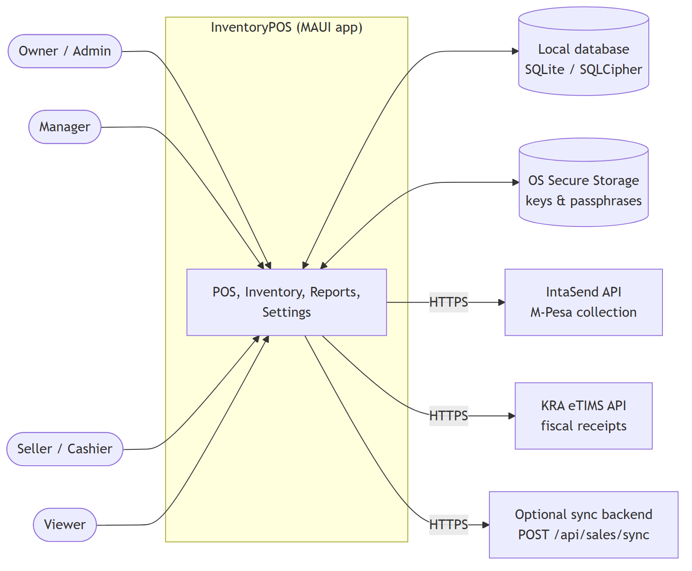
Limits are enforced at runtime by SubscriptionService. Paid plans renew on a 30-day cycle.
| Plan | Users | Branches | Products | Price / month |
|---|---|---|---|---|
| Free | 2 | 1 | 100 | Free |
| Basic | 5 | 3 | 1,000 | KES 500 |
| Pro | 20 | 10 | 10,000 | KES 1,500 |
| Enterprise | Unlimited | Unlimited | Unlimited | KES 5,000 |
InventoryPOS is a layered, MVVM desktop/mobile application with a clean dependency direction: presentation depends on application and domain services, which depend on persistence, and everything ultimately depends on a shared core of entities, enums, exceptions and utilities. There is no server component in the box; the app is the system of record for a single business and optionally communicates outward.
The core principles are:
MauiProgram) and injected via interfaces.The solution contains five projects, all under src/:
src/
InventoryPOS.Core Domain: entities, enums, exceptions, utilities, tenancy
InventoryPOS.Data EF Core DbContext, repositories, seed data, migrations
InventoryPOS.Services Subscriptions, Accounts, Mpesa, eTIMS, Sync, Reporting
InventoryPOS.Maui MAUI app: Views, ViewModels, Services (auth, data, print, sync)
InventoryPOS.UnitTests xUnit tests (Core, Data, Services layers)
database/ Local database assets (InventoryPOS.db, Schema.sql)
scripts/ Build & helper scripts (incl. docs export)
docs/ Documentation (this file, API, schema, deployment)
signing/ Android keystore and Windows PFX for releasesProject dependencies:
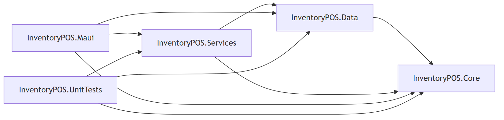
Note that InventoryPOS.UnitTests intentionally does not reference the MAUI project: the MAUI project targets mobile/desktop TFMs and cannot be loaded by the net8.0 test host. This shapes the testing strategy (see Chapter 5) business logic that must be unit-tested lives in Core, Data and Services.
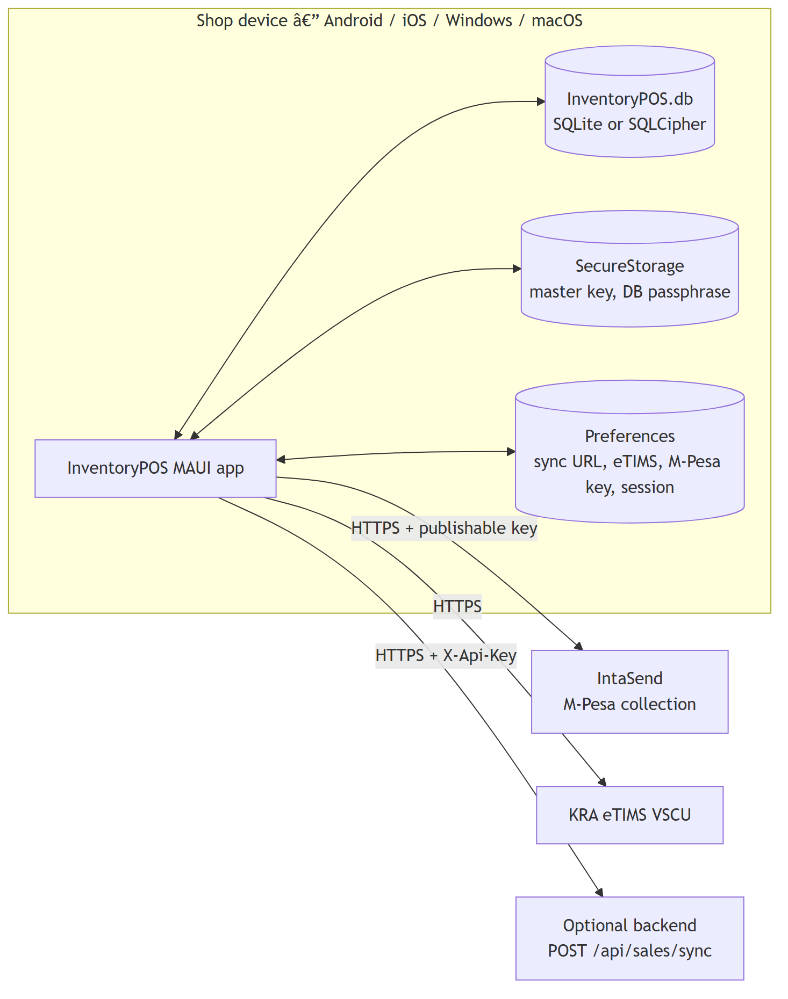
MauiProgram.CreateMauiApp() is the single composition root. Its registrations, in order, are:
ITenantContext (singleton), DatabaseEncryptionService (singleton, initialised at startup), SqliteConnectionFactory (singleton), and AppDbContext built from the factory’s connection string.LocalStorageService, PreferencesService.MpesaOptionsProvider, IMpesaClient → MpesaClient, ISubscriptionPaymentService → SubscriptionPaymentService.EtimsOptionsProvider, IEtimsClient → EtimsClient, IEtimsService → EtimsService.IRepository<> → BaseRepository<> plus specific repositories (customer, sale, user, product, supplier, purchase order).IConnectivity, ISyncTransport → HttpSyncTransport, SalesSyncService, SyncOptionsProvider, ISyncService → SyncService.Lifecycle choices matter: AppDbContext and most application services are scoped, TenantContext, the connection factory, encryption service and the options providers are singletons, and the connectivity abstraction is a singleton wrapping Connectivity.Current.
Startup runs the database bootstrap and seeding, restores the tenant for a persisted session, then routes to the login screen.
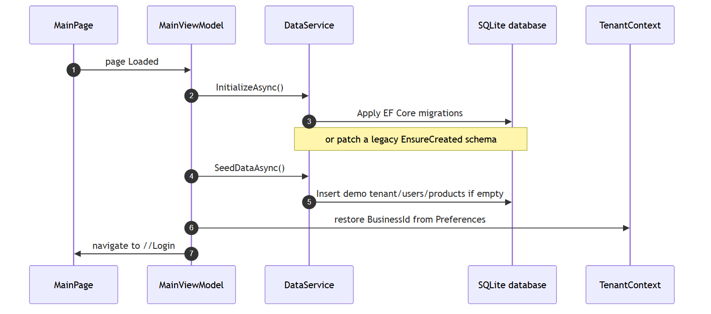
DataService.InitializeAsync() is deliberately defensive. It handles three cases: a database with no migrations (created via EnsureCreated), a normal database with an EF migrations-history table, and a legacy database created by an early EnsureCreated build. For the legacy case it adds any missing columns and marks all migrations as applied so future migrations continue from a known baseline.
A representative read (loading the dashboard) and a representative write (a sale) both follow the same path: View/ViewModel → application service → EF Core DbContext → SQLite, with global query filters silently enforcing tenant and soft-delete rules on every statement.
Per-installation settings are held in platform Preferences and resolved at call time through small provider classes, which keeps secrets and environment-specific values out of the UI and out of source control.
| Provider | Preferences keys | Purpose |
|---|---|---|
MpesaOptionsProvider |
IntaSendPublishableKey, IntaSendSandbox |
M-Pesa collection |
SyncOptionsProvider |
SyncBaseUrl, SyncApiKey |
Cloud backup endpoint |
EtimsOptionsProvider |
EtimsBaseUrl, EtimsTin, EtimsBranchId, EtimsDeviceSerial, EtimsClientId, EtimsClientSecret |
KRA fiscalisation |
Sensitive keys and session state are stored in OS secure storage (Keychain / Keystore via MAUI SecureStorage): the device master key, the SQLCipher passphrase, and session identifiers.
Persistence is Entity Framework Core 8 against SQLite. The database file lives at FileSystem.AppDataDirectory/InventoryPOS.db and is created and upgraded from EF Core migrations on first run. The domain model is made of 20 entities that all derive from BaseEntity, giving every row an identity plus audit and soft-delete columns (Id, CreatedAt, UpdatedAt, IsDeleted).
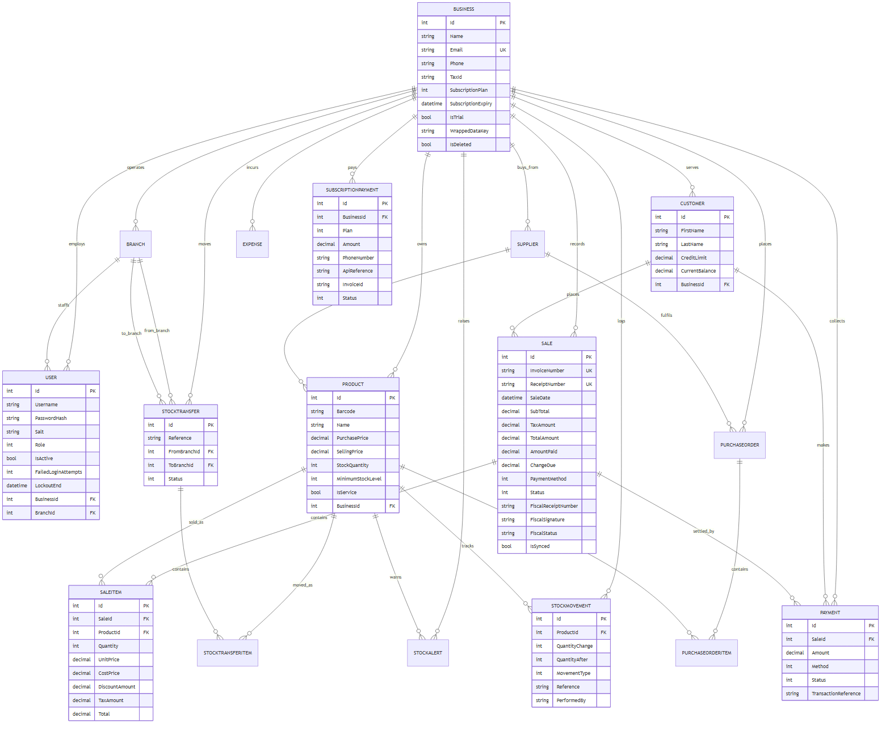
Tenant isolation is enforced in the data layer, not just the UI, so a coding mistake in a ViewModel cannot expose another business’s rows. This is implemented in AppDbContext.ApplyGlobalFilters using reflection over every entity that derives from BaseEntity:
!IsDeleted) is applied to every BaseEntity.int BusinessId property, a tenant filter is added: BusinessId == CurrentTenantId, unless CurrentTenantId == 0, in which case the tenant predicate is bypassed.The rule that Business itself only receives the soft-delete filter (it has no BusinessId) is intentional. The null/0 bypass exists so infrastructure code seeding and sign-in can operate across tenants. AuthService.LoginAsync explicitly calls .IgnoreQueryFilters() to find a user before a tenant is known, then activates the tenant for the rest of the session.
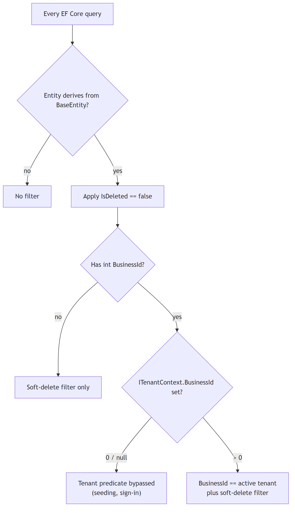
CurrentTenantId is read from the singleton ITenantContext and is evaluated per query, so changing the active tenant is immediately reflected without recreating the DbContext.
The schema is versioned by seven EF Core migrations:
| # | Migration | Adds |
|---|---|---|
| 1 | InitialCreate |
Core tables (businesses, products, sales, customers, etc.) |
| 2 | AddMultiTenancyAndSubscriptions |
Tenant and subscription columns/plans |
| 3 | AddSubscriptionPayments |
SubscriptionPayments table |
| 4 | AddStockMovements |
StockMovements ledger + indexes |
| 5 | AddSaleItemCostPrice |
SaleItems.CostPrice (profit calculation) |
| 6 | AddStockTransfers |
StockTransfers + StockTransferItems |
| 7 | AddFiscalReceiptFields |
Fiscal columns on Sales (eTIMS) |
Migrations are authored with the EF tools and applied automatically at startup:
dotnet ef migrations add <Name> `
-p src\InventoryPOS.Data\InventoryPOS.Data.csproj `
-s src\InventoryPOS.Data\InventoryPOS.Data.csprojIRepository<T> / BaseRepository<T> provide a small, testable persistence API (get by id, find, count, add, update, delete, save). Specialised repositories (ProductRepository, SaleRepository, CustomerRepository, UserRepository, SupplierRepository, PurchaseOrderRepository) add query methods specific to their aggregate. Services may also inject AppDbContext directly for transactional work for example, SaleService opens a transaction and mutates products, stock movements, payments and the sale in a single unit of work.
InventoryPOS protects data at two independent levels, both optional and backward-compatible.
CipherService implements per-business field encryption using EncryptionHelper (AES-256-GCM, 32-byte key, 12-byte nonce, 16-byte tag; ciphertext is base64(nonce ‖ ciphertext ‖ tag)). The key hierarchy is:
Business.WrappedDataKey. The raw data key is never written.Because GCM is authenticated, tampered ciphertext is rejected on decryption. The same primitive also powers password-independent key wrapping.
DatabaseEncryptionService adds optional full-database encryption:
SQLitePCLRaw.bundle_e_sqlcipher) instead of plain SQLite.ATTACH DATABASE … KEY … followed by sqlcipher_export.SqliteConnectionFactory attaches the passphrase to the connection string only when encryption is active, and always sets Foreign Keys=True.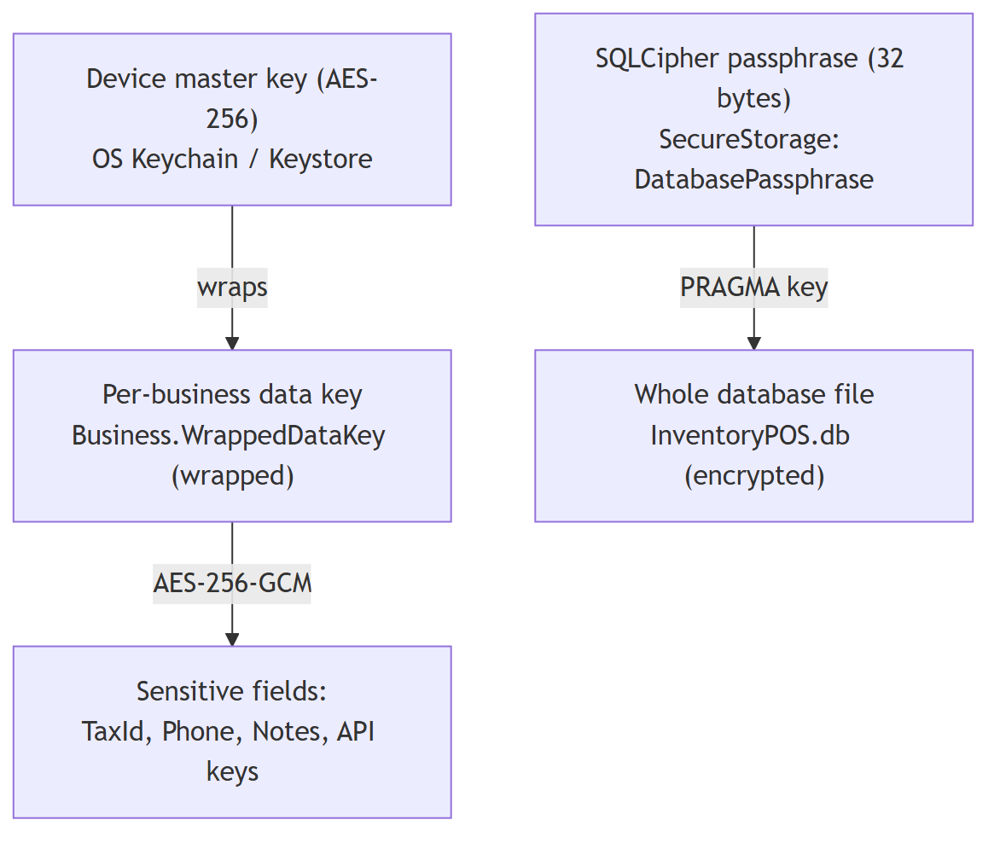
DatabaseSeeder provisions a demonstration tenant the first time the app runs: sample businesses (GMNEX Business Solutions, SmartP Kenya, Scholars Comfort, LUSI Stores), three users (admin, manager, seller), a set of categories, products, customers and suppliers. Seeded users are created with RequiresPasswordChange = true, forcing a password change at first sign-in. Registration of a new business seeds a default “Main” branch and three default categories automatically.
This chapter walks through each functional area from the user’s perspective and names the code that implements it.
Sign-in flow. LoginViewModel collects credentials and calls AuthService.LoginAsync. The service finds the user across tenants (IgnoreQueryFilters), rejects locked accounts, verifies the PBKDF2 hash, and on success checks that the tenant’s subscription is active (SubscriptionService.EnsureActiveAsync). It then records the session in secure storage, updates LastLoginAt/IsOnline, and activates tenant isolation by setting ITenantContext.BusinessId. First-time users are prompted to change their seeded password before continuing.
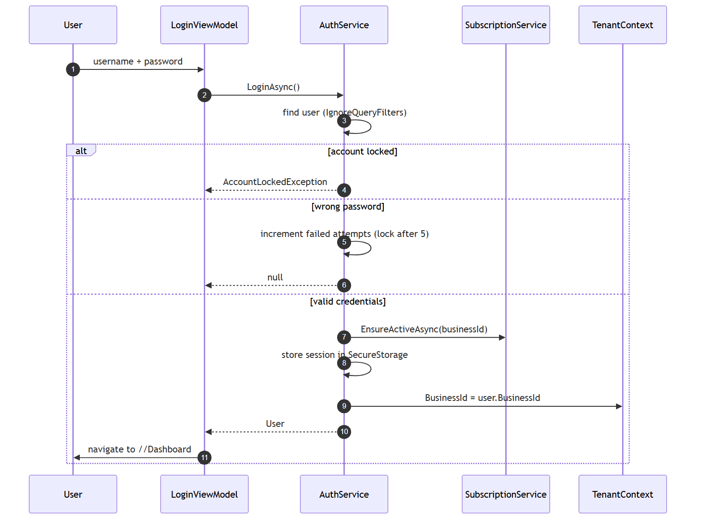
Password and session policy.
GetCurrentUserAsync detects expiry and logs the user out.Authorisation. AuthorizationService exposes intent-named checks (CanManageProductsAsync, CanCancelSalesAsync, CanManageSettingsAsync, …) built on HasPermissionAsync(requiredRole) with the numeric role comparison. Services re-check permissions server-side (e.g. SaleService.CancelSaleAsync requires Manager; StockTransferService requires product-management rights), so UI visibility is never the only guard.
The POS screen (POSViewModel / POSPage) supports product search, a cart, manual discounts, tax, split payments, held sales, debtor credit and receipt printing. Completing a sale is a single transactional unit of work:
Completed.A fiscal or network failure never rolls back the sale resilience is a hard rule.
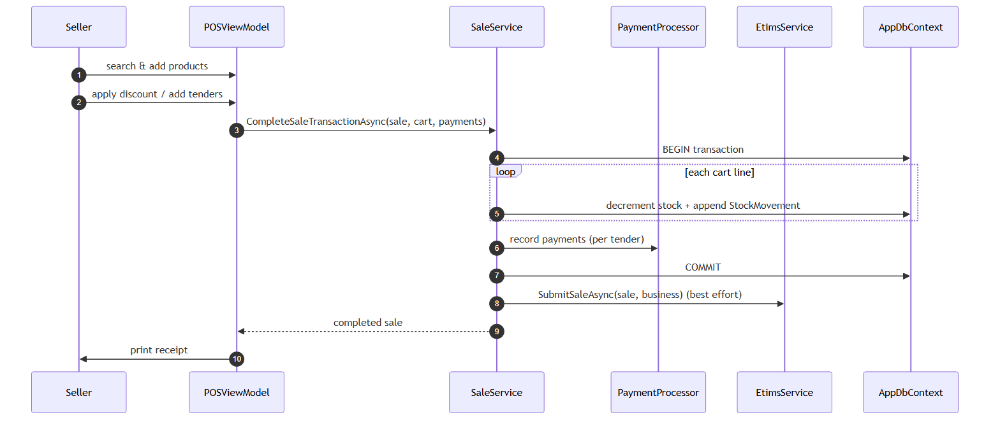
Split payments. A sale can be settled by more than one tender. Each PaymentTender (method, amount, reference) is processed individually and a Payment row is written per tender; the debtor case carries any outstanding balance.
Held sales. A sale in progress can be parked (“held”) and resumed later without losing the cart.
Cancellation. Cancelling a completed sale restores stock (writing reversal movements marked SaleCancelled) and requires Manager rights.
Every quantity change is written to the immutable StockMovements table with the change, the resulting balance (QuantityAfter), the movement type, a reference and the operator. Stock changes happen through StockLedger.Record, so a mutation and its audit record are committed together. Movement types include Opening, Sale, SaleCancelled, Refund, Purchase, Adjustment, TransferIn and TransferOut.
StockAlertService scans a business’s products after stock-affecting operations and creates LowStock/OutOfStock alerts (de-duplicated) when quantity falls to or below the minimum level. Alerts are acknowledged through the inventory UI.
Head offices move stock between branches with a custody-aware workflow. Transfers are created as Pending; dispatching removes stock from the source and moves the transfer to InTransit; receiving adds stock to the destination and moves it to Received. Cancelling an in-transit transfer returns the stock to the source. Quantities must be positive and the two branches distinct.
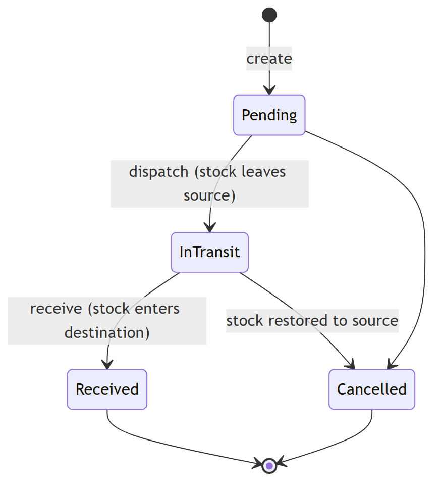
ReportService produces CSV exports to the app cache directory and returns the path so the UI can share or open the file:
SaleItems.CostPrice).PdfReportGenerator and ExcelReportGenerator exist as placeholders for future richer output.
Self-registration starts a 14-day Free trial. Upgrading or renewing a paid plan triggers an IntaSend STK push (Lipa na M-Pesa Express). A SubscriptionPayment is recorded as Pending, the customer approves on their phone, and activation happens either automatically (polling IntaSend’s payment status by invoice_id) or manually by an admin on the Manual Activations page. Admin settings show a renewal warning as the expiry approaches. Phone numbers are normalised to the 2547… format before submission.
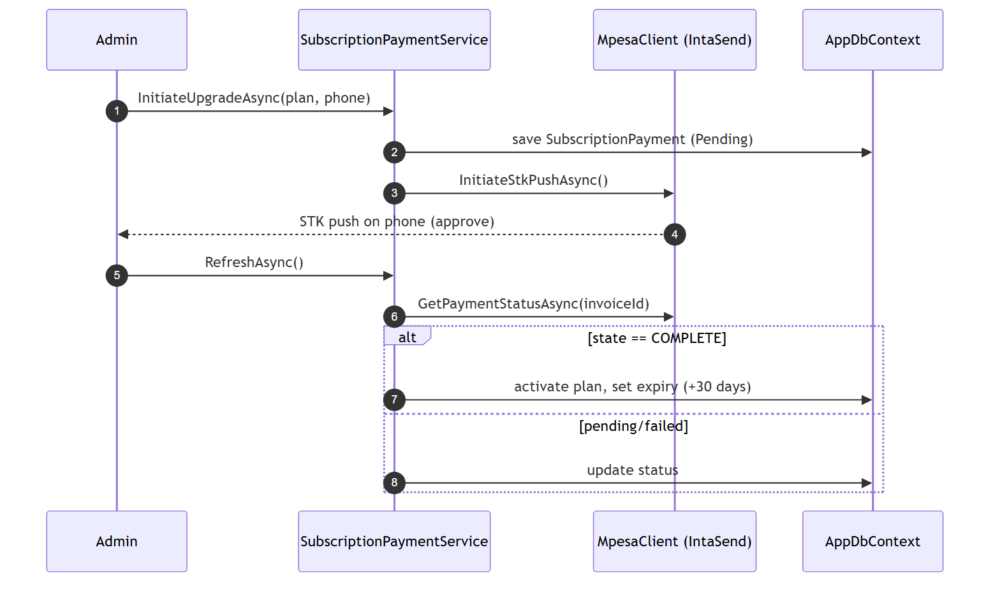
Only IntaSend’s publishable key ships in the app. IMpesaClient also implements IsValidWebhook (fixed-time challenge comparison) for when a backend is added to receive webhook confirmations.
Sales are the sync unit. The database itself is the queue: a sale is pending whenever IsSynced is false. SalesSyncService.PushPendingAsync selects up to 200 pending sales with their items, posts them via HttpSyncTransport to POST {BaseUrl}/api/sales/sync (optionally with an X-Api-Key header), and marks them synced only after the transport succeeds. SyncService (MAUI) gates the push on IConnectivity reporting internet access. A crash or dropped connection simply leaves the sales queued for the next attempt.
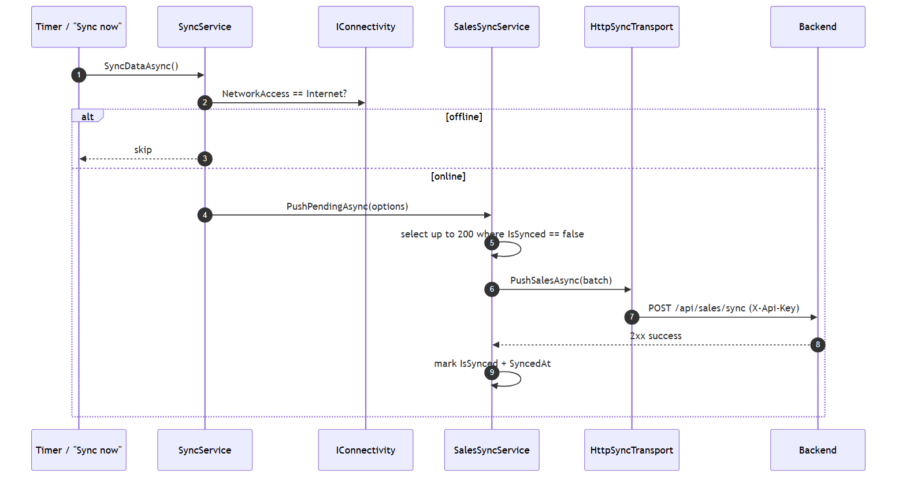
When configured, each completed sale is mapped to the eTIMS sales schema by EtimsService.BuildInvoice (a pure, unit-tested mapping) and submitted by EtimsClient to USER/api/trnsSales/saveSales. The response’s resultCd == "000" indicates success and carries the fiscal receipt number (rcptNo), internal data and signature. These are stored on the sale (FiscalReceiptNumber, FiscalInternalData, FiscalSignature, FiscalStatus) and printed on the receipt. When eTIMS is not configured, submission is skipped silently.
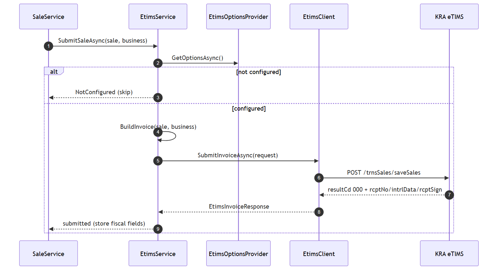
ReceiptPrinterService renders a receipt as HTML and shares it via the platform share sheet; when fiscal data is present it includes the KRA receipt number and signature, and shows a “pending” note when a fiscal submission failed. BarcodeLabelService and ThermalPrintService are present as placeholders for label and ESC/POS thermal printing.
AppShell defines the route structure: a bootstrap MainPage (init), Login, Register, a Home tab bar (Dashboard, POS, Products), a Manage tab bar (Inventory, Sales, Customers), and standalone routes for Suppliers, Purchase Orders, Branch Transfers, Reports, Settings and Manual Activations.
| Concern | Control |
|---|---|
| Password storage | PBKDF2-SHA256, 100k iterations, per-user 32-byte salt, fixed-time compare |
| Brute force | 5 attempts → 15-minute lockout |
| Session | 8-hour timeout, session state in secure storage |
| Transport of secrets | Only client-safe keys in-app; IntaSend secret/webhook challenge server-side; IsValidWebhook fixed-time comparison |
| Data at rest (fields) | AES-256-GCM with per-business data key wrapped by a device master key |
| Data at rest (database) | Optional SQLCipher full-database encryption; passphrase in secure storage |
| Tenant isolation | Global EF Core query filters on every BaseEntity with BusinessId |
| Auditability | Immutable stock-movement ledger; fiscal data retained on sales |
| Least privilege | Intent-named Can… authorisation checks re-verified in services |
Tests live in InventoryPOS.UnitTests and run against the Core, Data and Services layers (the MAUI project is intentionally out of scope). The suite currently contains 9 test classes and 44 passing tests, roughly:
| Test class | Focus |
|---|---|
EncryptionHelperTests |
AES-256-GCM encrypt/decrypt, key wrapping, tamper rejection |
DatabaseEncryptionTests |
SQLCipher: encrypted file has no SQLite header; wrong/absent key fails; correct key reads |
SubscriptionPlansTests |
Plan limits and pricing |
AccountServiceTests |
Tenant registration and provisioning |
SubscriptionPaymentServiceTests |
Payment records and activation logic |
MpesaClientTests |
IntaSend client request/response handling |
SalesSyncServiceTests |
Outbox batching and mark-synced behaviour |
EtimsServiceTests |
Invoice mapping, endpoint/headers, success and rejection parsing |
TenantIsolationTests |
Query filters scope rows to the active tenant (incl. stock transfers) |
Run the suite with:
dotnet test src\InventoryPOS.UnitTests\InventoryPOS.UnitTests.csprojPrerequisites
maui workload (dotnet workload install maui).Windows desktop
dotnet build src\InventoryPOS.Maui\InventoryPOS.Maui.csproj -f net8.0-windows10.0.19041.0
dotnet run --project src\InventoryPOS.Maui -f net8.0-windows10.0.19041.0Android
dotnet build src\InventoryPOS.Maui\InventoryPOS.Maui.csproj -f net8.0-android -c ReleaseSigning material for releases is kept in signing/ (inventorypos.keystore, inventorypos.pfx). Never commit production secrets; rotate keys if a device or keystore is compromised.
Target platform minimums: iOS 11.0, Mac Catalyst 13.1, Android 21.0, Windows 10 (10.0.17763.0).
InventoryPOS.db from the app data folder and restart.POST /api/sales/sync.The following are intentionally non-functional placeholders at this version and are empty files in the tree:
InventoryPOS.Services\Reporting\PdfReportGenerator.csInventoryPOS.Services\Reporting\ExcelReportGenerator.csInventoryPOS.Services\Cloud\CloudStorageService.csInventoryPOS.Services\Cloud\SyncHubService.csInventoryPOS.Maui\Services\Remote\{ApiClient,OnlineDatabaseService,SyncService}.csInventoryPOS.Maui\Services\Local\{LocalDatabaseService,SqliteService}.csInventoryPOS.Maui\Services\Sync\{SyncManager,ConflictResolver,OfflineQueueService}.csInventoryPOS.Maui\Services\Print\{BarcodeLabelService,ThermalPrintService}.csInventoryPOS.Maui\Helpers\{BarcodeScannerHelper,CameraHelper}.csInventoryPOS.Maui\Models\*.There is no conflict resolution in sync yet (append-only push), no server component, and barcode/camera hardware integration is not implemented (the POS uses search instead of scanning).
| Term | Meaning |
|---|---|
| Tenant | A business; the unit of data isolation and billing |
| STK push | Safaricom “Lipa na M-Pesa” prompt sent to a customer’s phone |
| eTIMS | Kenya Revenue Authority electronic Tax Invoice Management System |
| VSCU | Virtual Sales Control Unit; the eTIMS device profile |
| Outbox | The set of locally-recorded sales not yet pushed to the backend |
| Z-report | End-of-day cash reconciliation summary |
| SQLCipher | SQLite build with transparent full-database encryption |
D:\InventoryPOS
├─ InventoryPOS.sln
├─ README.md
├─ LICENSE
├─ docs/ (this document, API, schema, deployment)
├─ database/ (InventoryPOS.db, Schema.sql)
├─ scripts/ (seed-data.ps1, setup-database.ps1, export-docs.ps1)
├─ signing/ (Android keystore, Windows PFX)
└─ src/
├─ InventoryPOS.Core/
├─ InventoryPOS.Data/
├─ InventoryPOS.Services/
├─ InventoryPOS.Maui/
└─ InventoryPOS.UnitTests/| Package | Version |
|---|---|
| Microsoft.EntityFrameworkCore.Sqlite.Core | 8.0.13 |
| Microsoft.EntityFrameworkCore.Design / Tools | 8.0.13 |
| SQLitePCLRaw.bundle_e_sqlcipher | 2.1.10 |
| CommunityToolkit.Mvvm | 8.4.2 |
| Newtonsoft.Json | 13.0.4 |
| Microsoft.Maui.Controls | $(MauiVersion) |
| Microsoft.Extensions.Logging.Debug | 8.0.1 |
| xunit | 2.5.3 |
| Microsoft.NET.Test.Sdk | 17.8.0 |
| coverlet.collector | 6.0.0 |
End of document.